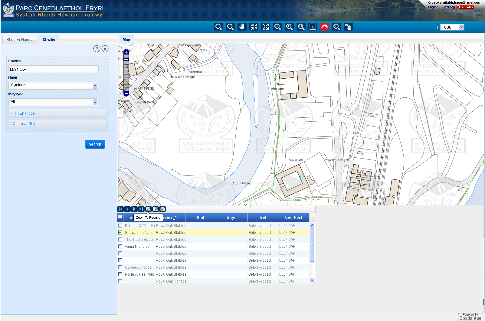
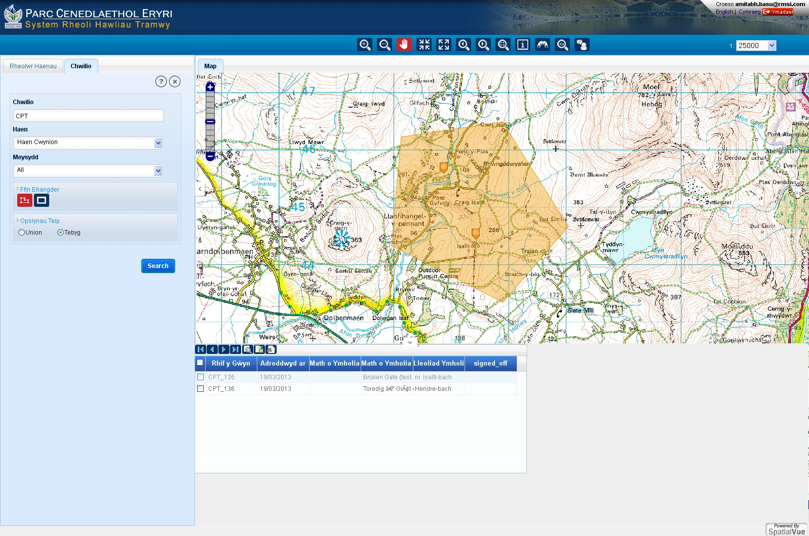

Mae’r teclyn chwilio yn eich galluogi i chwilio am gwyn sydd wedi ei gofnodi eisoes neu chwilio am leoliad cyfeiriad post.
I chwilio am gwyn :
Rhowch y gwerth o ddiddordeb yn y bocs testun chwilio e.e Cyfeirnod y gwyn
Dewiswch ‘Haen Cwynion’ yn y rhestr sy’n ymddangos yn y blwch ‘Haen’
Dewiswch ‘ID yr Achwynydd’ yn y rhestr sy’n ymddangos yn y blwch ‘Meysydd’
Cliciwch ar y botwm ‘Chwilio’. Os oes yna baru yna bydd y system yn eu cyflwyno gyda’r canlyniadau.
Er mwyn gweld y gwyn ar fap o raddfa fawr; dewiswch ef yn y panel a cliciwch ar ‘Nesáu at y Canlyniadau’.
Gallwch chwilio am air neu mynegiad wrth ei fewnbynnu yn y blwch ‘Chwilio’ ac yna dewis ‘Oll’ yn y blwch meysydd.
Os nag oes unrhyw opsiwn wedi ei ddewis o’r ‘Ffin ehangder’ neu ‘Opsiynau teip’ yna bydd y system yn chwilio am bâr ‘Union’ i’r gair neu’r mynegiad.
I chwilio am air neu mynegiad ‘tebyg’ yna dewiswch yr opsiwn ‘tebyg’ yn y blwch ‘Opsiynau teip’.
I chwilio am God Post:
Yn y blwch ‘Chwilio’, mewnbynnwch y cod post sydd o ddiddordeb.
Dewiswch ‘Cyfeiriad’ yn y rhestr sy’n ymddangos o dan ‘Haen’
Cliciwch ar y botwm ‘Chwilio’. Os oes pâr yn bodoli yna bydd y canlyniadau yn cael eu cyflwyno mewn panel newydd o dan y map.
I edrych ar lleoliad y cyfeiriad. Dewiswch y canlyniad o ddiddordeb yn y panel o dan y map ac yna cliciwch ar ‘Nesáu at y canlyniad’

I chwilio ar y map am gwyn sydd eisoes wedi ei gofnodi:
Yn y blwch ‘Chwilio’ mewnbynnwch ‘CPT’ y gwyn (dylid ei dderbyn pan yn cofnodi’r gwyn am y tro cyntaf)
Dewiswch ‘Cwynion’ o’r rhestr sy’n ymddangos yn y bwlch o dan ‘Haen’.
Cliciwch ar ‘Ffin Ehangder’ a bydd teclyn polygon a phetryal yn ymddangos.
Cliciwch ar y teclyn polygon a lluniwch polygon ar y map.
Cliciwch ar ‘Opsiynau Teip’ a dewiswch ‘Tebyg’.
Cliciwch ar y botwm ‘Chwilio’. Caiff y canlyniadau eu cyflwyno yn y panel o dan y map.
Ar gyfer gweld lleoliad y gwyn. Dewiswch y canlyniad o ddiddordeb yn y panel o dan y map ac yna cliciwch ar ‘Nesáu at y canlyniad’
Gellir defnyddio’r teclyn petryal yn yr un modd. Bydd pob cwyn sydd wedi ei lunio a phetryal yn cael eu rhestru.
